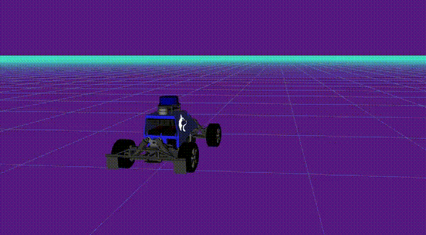
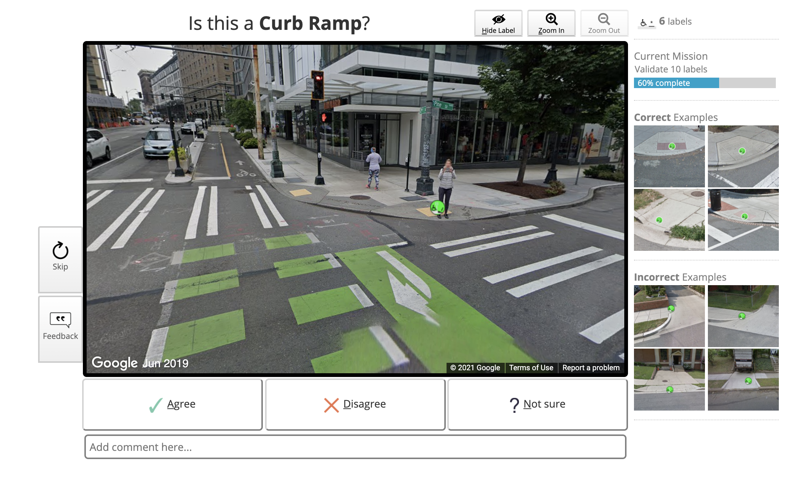
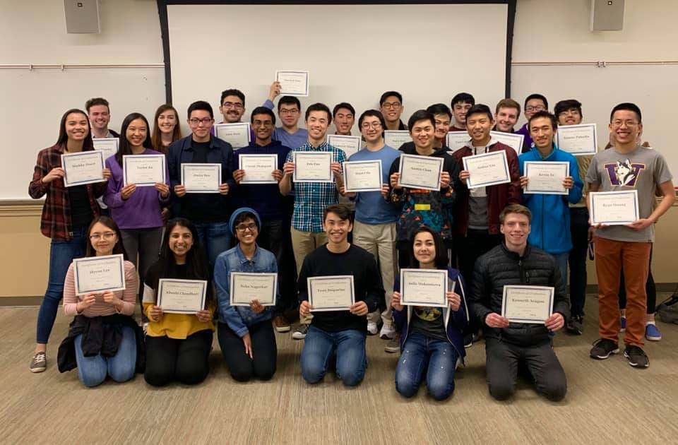

Madison Doerr
- Email: madison.doerr@gmail.com
- Phone: 719-213-0937
- Linkedin: madisoncdoerr
- GitHub: mcdoerr
I'm a student at the University of Washington majoring in computer science and minoring in philosophy!
My research and industry interests are in robotics, accessibility, and cultivating large datasets. Furthermore, I'm passionate about ethics and philosohpy in computer science and business.
In my free time, I like to boulder, play piano, and peruse the cheese aisle at Trader Joe's.

Last summer, I was a fullstack intern at Pinterest on the Insights and Analytics team! I worked on extending the app on Android and iOS to show statistics to content creators about their current audience and their target audience using React Native. I learned a ton about running A/B experiments, creating API endpoints, and writing maintainable code on both ends of the stack. I'm looking forwards to coming back to Pinterest this summer!
I recently joined the Personal Robotics Lab to work on MuSHr, the Multi-agent System for non-Holonomic Racing. I've really enjoyed debugging physical systems as well as software, and learning more about robotic control stacks, including ROS.
Project sidewalk is an open-source project aimed to gather data about the world's sidewalks and their accessibility through gamifying data collection. I've learned a lot about data collection and software development from working on this project, and I love contributing to open-source projects and using software to make the world more accessible!
I've worked as a teaching assistant in the Paul G. Allen School of Computer Science and Engineering for 5 quarters. I love teaching because it showed me how to communicate better and to work towards a common goal: the student's understanding. It's also improved my communication skills and my ability to write on a whiteboard quickly!
